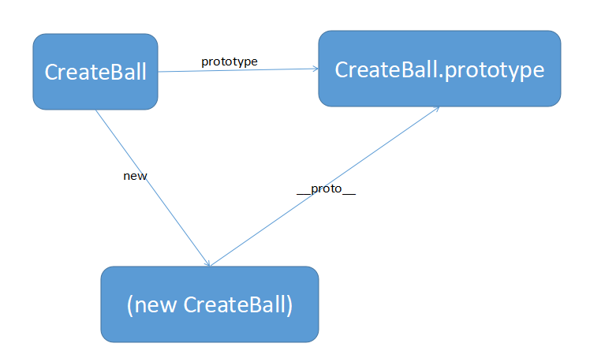

<!DOCTYPE html>
<html>
<head><meta name="generator" content="Hexo 3.9.0">
  <meta charset="utf-8">
  
  <title>ES6介绍和使用（二） | 暴走的猿猴</title>
  <meta name="viewport" content="width=device-width, initial-scale=1, maximum-scale=1">
  <meta name="description" content="摘要：ES6、ES7简介和调试方法">
<meta name="keywords" content="js">
<meta property="og:type" content="article">
<meta property="og:title" content="ES6介绍和使用（二）">
<meta property="og:url" content="https://charley-liu.github.io/2021/03/17/ES6 2/index.html">
<meta property="og:site_name" content="暴走的猿猴">
<meta property="og:description" content="摘要：ES6、ES7简介和调试方法">
<meta property="og:locale" content="zh-CN">
<meta property="og:image" content="https://charley-liu.github.io/resource/blogs/protoType.png">
<meta property="og:updated_time" content="2021-04-08T15:53:45.732Z">
<meta name="twitter:card" content="summary">
<meta name="twitter:title" content="ES6介绍和使用（二）">
<meta name="twitter:description" content="摘要：ES6、ES7简介和调试方法">
<meta name="twitter:image" content="https://charley-liu.github.io/resource/blogs/protoType.png">
  
    <link rel="alternative" href="/atom.xml" title="暴走的猿猴" type="application/atom+xml">
  
  
    <link rel="icon" href="/img/favicon.ico">
  
  
      <link rel="stylesheet" href="//cdn.bootcss.com/animate.css/3.5.0/animate.min.css">
  
  <link rel="stylesheet" href="/css/style.css">
  <link rel="stylesheet" href="/font-awesome/css/font-awesome.min.css">
  <link rel="apple-touch-icon" href="/apple-touch-icon.png">
  
  
      <link rel="stylesheet" href="/fancybox/jquery.fancybox.css">
  
  <!-- 加载特效 -->
    <script src="/js/pace.js"></script>
    <link href="/css/pace/pace-theme-flash.css" rel="stylesheet">
  <script>
      var yiliaConfig = {
          rootUrl: '/',
          fancybox: true,
          animate: true,
          isHome: false,
          isPost: true,
          isArchive: false,
          isTag: false,
          isCategory: false,
          open_in_new: false
      }
  </script>
</head></html>
<body>
  <div id="container">
    <div class="left-col">
    <div class="overlay"></div>
<div class="intrude-less">
    <header id="header" class="inner">
        <a href="/" class="profilepic">
            
            
            
        </a>

        <hgroup>
          <h1 class="header-author"><a href="/" title="Hi Mate">Charley Liu</a></h1>
        </hgroup>

        
        <p class="header-subtitle">压力是动力他妈</p>
        
        
        

        <div id="switch-area" class="switch-area">
            <div class="switch-wrap">
                <section class="switch-part switch-part1">
                    <nav class="header-menu">
                        <ul>
                        
                            <li><a href="https://charley-liu.github.io">博客首页</a></li>
                        
                            <li><a href="/works">作品展示</a></li>
                        
                            <li><a href="/about">关于作者</a></li>
                        
                        </ul>
                    </nav>
                    <nav class="header-nav">
                        <ul class="social">
                            
                                <a class="fl mail" target="_blank" href="http://mail.qq.com/cgi-bin/qm_share?t=qm_mailme&email=wLe1rKWp8-n39fL18Pn5gLGx7qOvrQ" title="mail">mail</a>
                            
                                <a class="fl github" target="_blank" href="https://github.com/Charley-liu" title="github">github</a>
                            
                                <a class="fl zhihu" target="_blank" href="https://www.zhihu.com/people/bob-86-15-72/activities" title="zhihu">zhihu</a>
                            
                                <a class="fl weibo" target="_blank" href="http://weibo.com/p/1005052706169463/home?from=page_100505&mod=TAB&is_hot=1#place" title="weibo">weibo</a>
                            
                        </ul>
                    </nav>
                </section>
                
                
                
                

                
                
                <section class="switch-part switch-part3">
                
                    <div id="js-aboutme">喜欢接触新鲜事物、迎接新的挑战，更爱游离于错综复杂的编码与逻辑中</div>
                </section>
                
            </div>
        </div>
    </header>                
</div>
    </div>
    <div class="mid-col">
      <nav id="mobile-nav">
      <div class="overlay">
          <div class="slider-trigger"></div>
          <h1 class="header-author js-mobile-header hide"><a href="/" title="Me">Charley Liu</a></h1>
      </div>
    <div class="intrude-less">
        <header id="header" class="inner">
            <a href="/" class="profilepic">
                
                    
                
            </a>
            <hgroup>
              <h1 class="header-author"><a href="/" title="Me">Charley Liu</a></h1>
            </hgroup>
            
            <p class="header-subtitle">压力是动力他妈</p>
            
            <nav class="header-menu">
                <ul>
                
                    <li><a href="https://charley-liu.github.io">博客首页</a></li>
                
                    <li><a href="/works">作品展示</a></li>
                
                    <li><a href="/about">关于作者</a></li>
                
                <div class="clearfix"></div>
                </ul>
            </nav>
            <nav class="header-nav">
                <div class="social">
                    
                        <a class="mail" target="_blank" href="http://mail.qq.com/cgi-bin/qm_share?t=qm_mailme&email=wLe1rKWp8-n39fL18Pn5gLGx7qOvrQ" title="mail">mail</a>
                    
                        <a class="github" target="_blank" href="https://github.com/Charley-liu" title="github">github</a>
                    
                        <a class="zhihu" target="_blank" href="https://www.zhihu.com/people/bob-86-15-72/activities" title="zhihu">zhihu</a>
                    
                        <a class="weibo" target="_blank" href="http://weibo.com/p/1005052706169463/home?from=page_100505&mod=TAB&is_hot=1#place" title="weibo">weibo</a>
                    
                </div>
            </nav>
        </header>                
    </div>
</nav>
      <div class="body-wrap"><article id="post-ES6 2" class="article article-type-post" itemscope itemprop="blogPost">
  
    <div class="article-meta">
      <a href="/2021/03/17/ES6 2/" class="article-date">
      <time datetime="2021-03-17T14:39:32.000Z" itemprop="datePublished">2021-03-17</time>
</a>
    </div>
  
  <div class="article-inner">
    
      <input type="hidden" class="isFancy" />
    
    
      <header class="article-header">
        
  
    <h1 class="article-title" itemprop="name">
      ES6介绍和使用（二）
    </h1>
  

      </header>
      
      <div class="article-info article-info-post">
        
    <div class="article-category tagcloud">
    <a class="article-category-link" href="/categories/日志/">日志</a><a class="article-category-link" href="/categories/日志/二级目录/">二级目录</a>
    </div>


        
    <div class="article-tag tagcloud">
        <ul class="article-tag-list"><li class="article-tag-list-item"><a class="article-tag-list-link" href="/tags/js/">js</a></li></ul>
    </div>

        <div class="clearfix"></div>
      </div>
      
    
    <div class="article-entry" itemprop="articleBody">
      
          
        <p>摘要：ES6、ES7简介和调试方法<br><a id="more"></a></p>
<blockquote>
<p>简介：</p>
<blockquote>
<p>ES 就是 ECMAScript的简称，ECMAScript是一种由Ecma国际（前身为欧洲计算机制造商协会,英文名称是European Computer Manufacturers Association）通过ECMA-262标准化的脚本程序设计语言。<br>ES6 也叫 ES2015 全称是ECMAScript2015</p>
</blockquote>
</blockquote>
<p>咱们接着上次未完的ES继续。。。</p>
<h3 id="new-Set"><a href="#new-Set" class="headerlink" title="new Set()"></a>new Set()</h3><blockquote>
<p>1.1 ES6 提供了新的数据结构 Set。它类似于数组，但是成员的值都是唯一的，没有重复的值<br><figure class="highlight js"><table><tr><td class="gutter"><pre><span class="line">1</span><br><span class="line">2</span><br><span class="line">3</span><br><span class="line">4</span><br><span class="line">5</span><br><span class="line">6</span><br></pre></td><td class="code"><pre><span class="line"><span class="keyword">let</span> arr = [<span class="number">1</span>,<span class="number">2</span>,<span class="number">2</span>,<span class="number">3</span>,<span class="number">4</span>];</span><br><span class="line"><span class="keyword">let</span> a = <span class="built_in">Array</span>.from(<span class="keyword">new</span> <span class="built_in">Set</span>(arr));   <span class="comment">//使用Array.from()转成数组</span></span><br><span class="line"><span class="keyword">let</span> result = [...new <span class="built_in">Set</span>(arr)];     <span class="comment">//使用...扩展运算符</span></span><br><span class="line"></span><br><span class="line"><span class="built_in">console</span>.log(a);      <span class="comment">//[1,2,3,4]</span></span><br><span class="line"><span class="built_in">console</span>.log(result); <span class="comment">//[1,2,3,4]</span></span><br></pre></td></tr></table></figure></p>
</blockquote>
<blockquote>
<p>1.2 检查数组是否有重复项<br><figure class="highlight js"><table><tr><td class="gutter"><pre><span class="line">1</span><br><span class="line">2</span><br><span class="line">3</span><br></pre></td><td class="code"><pre><span class="line"><span class="keyword">let</span> arr = [<span class="number">1</span>,<span class="number">2</span>,<span class="number">3</span>,<span class="number">3</span>,<span class="number">4</span>,<span class="number">5</span>];</span><br><span class="line"></span><br><span class="line"><span class="built_in">console</span>.log(<span class="keyword">new</span> <span class="built_in">Set</span>(arr).size !== arr.length); <span class="comment">//true</span></span><br></pre></td></tr></table></figure></p>
</blockquote>
<p><strong><em> 注意：<code>Set.prototype.size</code>是返回Set实例的成员总数 </em></strong></p>
<h3 id="箭头函数-gt"><a href="#箭头函数-gt" class="headerlink" title="箭头函数 =&gt;"></a>箭头函数 =&gt;</h3><blockquote>
<p>1.1 用<code>=&gt;</code>来表示函数<br>1.1.1 简单的箭头函数<br><figure class="highlight js"><table><tr><td class="gutter"><pre><span class="line">1</span><br><span class="line">2</span><br><span class="line">3</span><br></pre></td><td class="code"><pre><span class="line"><span class="keyword">const</span> sum = <span class="function">(<span class="params">a,b</span>)=&gt;</span>&#123;</span><br><span class="line">	<span class="keyword">return</span> a + b;</span><br><span class="line">&#125;</span><br></pre></td></tr></table></figure></p>
</blockquote>
<blockquote>
<p>如果一个函数体里面，只有唯一的return语句，此时可以去掉return 这个关键字和 { }这个符号。<br>上述等价于👇<br><figure class="highlight js"><table><tr><td class="gutter"><pre><span class="line">1</span><br></pre></td><td class="code"><pre><span class="line"><span class="keyword">const</span> sum = <span class="function">(<span class="params">a,b</span>) =&gt;</span> a+b;</span><br></pre></td></tr></table></figure></p>
</blockquote>
<blockquote>
<p>如果形参只有一个，此时可以省略（）;<br><figure class="highlight js"><table><tr><td class="gutter"><pre><span class="line">1</span><br><span class="line">2</span><br><span class="line">3</span><br></pre></td><td class="code"><pre><span class="line"><span class="keyword">const</span> area = <span class="function">(<span class="params">r</span>) =&gt;</span> <span class="number">3.14</span>*r*r;</span><br><span class="line"><span class="comment">//等价于👇</span></span><br><span class="line"><span class="keyword">const</span> area = <span class="function"><span class="params">r</span> =&gt;</span> <span class="number">3.14</span>*r*r;</span><br></pre></td></tr></table></figure></p>
</blockquote>
<blockquote>
<p>1.2<br>可以连续写箭头函数，外层函数返回的是一个函数。<br><figure class="highlight js"><table><tr><td class="gutter"><pre><span class="line">1</span><br><span class="line">2</span><br><span class="line">3</span><br><span class="line">4</span><br><span class="line">5</span><br><span class="line">6</span><br><span class="line">7</span><br><span class="line">8</span><br><span class="line">9</span><br></pre></td><td class="code"><pre><span class="line"><span class="keyword">const</span> fun = <span class="function"><span class="params">a</span> =&gt;</span> <span class="function"><span class="params">b</span> =&gt;</span> a+b;</span><br><span class="line"><span class="comment">//等价于👇</span></span><br><span class="line"><span class="keyword">const</span> fun = <span class="function"><span class="keyword">function</span>(<span class="params">a</span>)</span>&#123;</span><br><span class="line">	<span class="keyword">return</span> <span class="function"><span class="keyword">function</span>(<span class="params">b</span>)</span>&#123;</span><br><span class="line">		<span class="keyword">return</span> a+b;</span><br><span class="line">	&#125;</span><br><span class="line">&#125;</span><br><span class="line"></span><br><span class="line">fun(<span class="number">3</span>)(<span class="number">4</span>); <span class="comment">//调用的时候需要两个括号</span></span><br></pre></td></tr></table></figure></p>
</blockquote>
<blockquote>
<p>1.3 箭头函数与普通的函数一样，也可以使用ES6的剩余参数<br><figure class="highlight js"><table><tr><td class="gutter"><pre><span class="line">1</span><br><span class="line">2</span><br><span class="line">3</span><br></pre></td><td class="code"><pre><span class="line"><span class="keyword">const</span> fun = <span class="function">(<span class="params">a,...args</span>) =&gt;</span> args;</span><br><span class="line"></span><br><span class="line"><span class="built_in">console</span>.log(fun(<span class="number">0</span>,<span class="number">1</span>,<span class="number">2</span>,<span class="number">3</span>,<span class="number">4</span>,<span class="number">5</span>,<span class="number">6</span>)); <span class="comment">//[1,2,3,4,5,6]</span></span><br></pre></td></tr></table></figure></p>
</blockquote>
<blockquote>
<p>当语句不为单行而是多行语句的时候，需要使用{}把语句括起来<br><figure class="highlight js"><table><tr><td class="gutter"><pre><span class="line">1</span><br><span class="line">2</span><br><span class="line">3</span><br><span class="line">4</span><br></pre></td><td class="code"><pre><span class="line"><span class="keyword">const</span> fun = <span class="function">(<span class="params">a,...args</span>) =&gt;</span>&#123;</span><br><span class="line">	<span class="built_in">console</span>.log(a);</span><br><span class="line">	<span class="built_in">console</span>.log(args);</span><br><span class="line">&#125;</span><br></pre></td></tr></table></figure></p>
</blockquote>
<h3 id="ES6中新的类定义方式-Class"><a href="#ES6中新的类定义方式-Class" class="headerlink" title="ES6中新的类定义方式 Class"></a>ES6中新的类定义方式 Class</h3><blockquote>
<p>1.1 在ES5中定义类的方式，原来定义一个类，是用是构造函数，用new 类调用。此时这个函数的上下文就是返回的新的的对象<br><figure class="highlight js"><table><tr><td class="gutter"><pre><span class="line">1</span><br><span class="line">2</span><br><span class="line">3</span><br><span class="line">4</span><br><span class="line">5</span><br><span class="line">6</span><br><span class="line">7</span><br><span class="line">8</span><br><span class="line">9</span><br><span class="line">10</span><br><span class="line">11</span><br><span class="line">12</span><br><span class="line">13</span><br><span class="line">14</span><br><span class="line">15</span><br><span class="line">16</span><br></pre></td><td class="code"><pre><span class="line"><span class="function"><span class="keyword">function</span> <span class="title">CreateBall</span>(<span class="params">width,height,color</span>)</span>&#123;</span><br><span class="line">	 <span class="keyword">this</span>.width = width;</span><br><span class="line">	 <span class="keyword">this</span>.height = height;</span><br><span class="line">	 <span class="keyword">this</span>.color = color;</span><br><span class="line">	 <span class="keyword">this</span>.update();</span><br><span class="line">&#125;;</span><br><span class="line"></span><br><span class="line">CreateBall.prototype.update = <span class="function"><span class="keyword">function</span>(<span class="params"></span>)</span>&#123;</span><br><span class="line">	<span class="built_in">console</span>.log(<span class="string">`我是<span class="subst">$&#123;<span class="keyword">this</span>.color&#125;</span>的球，宽度为<span class="subst">$&#123;<span class="keyword">this</span>,width&#125;</span>cm,高度为<span class="subst">$&#123;<span class="keyword">this</span>.height&#125;</span>cm!`</span>);</span><br><span class="line">&#125;</span><br><span class="line"></span><br><span class="line"><span class="keyword">new</span> CreateBall(<span class="number">10</span>,<span class="number">10</span>,<span class="string">"白色"</span>);</span><br><span class="line"></span><br><span class="line"><span class="built_in">console</span>.log((<span class="keyword">new</span> CreateBall(<span class="number">10</span>,<span class="number">10</span>,<span class="string">"白色"</span>)).__proto__ === CreateBall.prototype); <span class="comment">//true</span></span><br><span class="line"><span class="built_in">console</span>.log(CreateBall.prototype.hasOwnProperty(<span class="string">"update"</span>)); <span class="comment">//true</span></span><br><span class="line"><span class="built_in">console</span>.log(<span class="keyword">new</span> CreateBall(<span class="number">10</span>,<span class="number">10</span>,<span class="string">"白色"</span>).hasOwnProperty(<span class="string">"update"</span>)); <span class="comment">//false</span></span><br></pre></td></tr></table></figure></p>
</blockquote>
<p></p>
<blockquote>
<p>1.2 ES6 <code>Class</code>类新的写法<br><figure class="highlight js"><table><tr><td class="gutter"><pre><span class="line">1</span><br><span class="line">2</span><br><span class="line">3</span><br><span class="line">4</span><br><span class="line">5</span><br><span class="line">6</span><br><span class="line">7</span><br><span class="line">8</span><br><span class="line">9</span><br><span class="line">10</span><br><span class="line">11</span><br><span class="line">12</span><br><span class="line">13</span><br><span class="line">14</span><br><span class="line">15</span><br><span class="line">16</span><br><span class="line">17</span><br></pre></td><td class="code"><pre><span class="line"><span class="class"><span class="keyword">class</span> <span class="title">Createall</span> </span>&#123;</span><br><span class="line">	<span class="keyword">constructor</span>(width,height,color)&#123;</span><br><span class="line">		<span class="keyword">this</span>.width = width;</span><br><span class="line">	 	<span class="keyword">this</span>.height = height;</span><br><span class="line">	 	<span class="keyword">this</span>.color = color;</span><br><span class="line">	&#125;</span><br><span class="line">	update()&#123;</span><br><span class="line">		<span class="built_in">console</span>.log(<span class="string">`我是<span class="subst">$&#123;<span class="keyword">this</span>.color&#125;</span>的球，宽度为<span class="subst">$&#123;<span class="keyword">this</span>,width&#125;</span>cm,高度为<span class="subst">$&#123;<span class="keyword">this</span>.height&#125;</span>cm!`</span>);</span><br><span class="line">	&#125;</span><br><span class="line">&#125;</span><br><span class="line"></span><br><span class="line"><span class="keyword">let</span> newBall = <span class="keyword">new</span> createBall(<span class="number">10</span>,<span class="number">10</span>,<span class="string">"白色"</span>);</span><br><span class="line">newBall.update();</span><br><span class="line"></span><br><span class="line"><span class="built_in">console</span>.log(newBall.__proto__ === CreateBall.prototype); <span class="comment">//true</span></span><br><span class="line"><span class="built_in">console</span>.log(CreateBall.prototype.hasOwnProperty(<span class="string">"update"</span>)); <span class="comment">//true</span></span><br><span class="line"><span class="built_in">console</span>.log(newBall.hasOwnproperty(<span class="string">"update"</span>)); <span class="comment">//false</span></span><br></pre></td></tr></table></figure></p>
</blockquote>
<h3 id="继承"><a href="#继承" class="headerlink" title="继承"></a>继承</h3><blockquote>
<p>1.1 传统继承方式<br><figure class="highlight js"><table><tr><td class="gutter"><pre><span class="line">1</span><br><span class="line">2</span><br><span class="line">3</span><br><span class="line">4</span><br><span class="line">5</span><br><span class="line">6</span><br><span class="line">7</span><br><span class="line">8</span><br><span class="line">9</span><br><span class="line">10</span><br><span class="line">11</span><br><span class="line">12</span><br><span class="line">13</span><br><span class="line">14</span><br><span class="line">15</span><br><span class="line">16</span><br><span class="line">17</span><br><span class="line">18</span><br><span class="line">19</span><br><span class="line">20</span><br><span class="line">21</span><br><span class="line">22</span><br><span class="line">23</span><br><span class="line">24</span><br></pre></td><td class="code"><pre><span class="line"><span class="function"><span class="keyword">function</span> <span class="title">Son</span>(<span class="params">name,sex,age</span>)</span>&#123;</span><br><span class="line">	<span class="keyword">this</span>.name = name;</span><br><span class="line">	<span class="keyword">this</span>.sex = sex;</span><br><span class="line">	<span class="keyword">this</span>.age = age;</span><br><span class="line">&#125;</span><br><span class="line"></span><br><span class="line">Son.prototype.goPlay = funcyion()&#123;</span><br><span class="line">	<span class="built_in">console</span>.log(<span class="string">"您好，我是"</span> + <span class="keyword">this</span>.name + <span class="string">"今年"</span> + <span class="keyword">this</span>.age );</span><br><span class="line">&#125;</span><br><span class="line"></span><br><span class="line"><span class="function"><span class="keyword">function</span> <span class="title">People</span>(<span class="params">name,sex,age,address</span>)</span>&#123;</span><br><span class="line">	Son.apply(<span class="keyword">this</span>,<span class="built_in">arguments</span>);</span><br><span class="line">	<span class="keyword">this</span>.address = address;</span><br><span class="line">&#125;</span><br><span class="line"></span><br><span class="line">People.prototype = <span class="keyword">new</span> Son();</span><br><span class="line"></span><br><span class="line">People.prototype.sayHello = <span class="function"><span class="keyword">function</span>(<span class="params"></span>)</span>&#123;</span><br><span class="line">	<span class="built_in">console</span>.log(<span class="keyword">this</span>.name + <span class="string">"地址是"</span> + <span class="keyword">this</span>.address);</span><br><span class="line">&#125;</span><br><span class="line"></span><br><span class="line"><span class="keyword">var</span> test = <span class="keyword">new</span> People(<span class="string">"张三"</span>,<span class="string">"男"</span>,<span class="number">12</span>,<span class="string">"北京市朝阳区"</span>);</span><br><span class="line">test.goPlay();</span><br><span class="line">test.sayHello();</span><br></pre></td></tr></table></figure></p>
</blockquote>
<blockquote>
<p>1.2 在ES6中，使用<code>extends</code>关键字表示继承，在构造函数中可以使用<code>super</code>来调用父类的构造函数。<br><figure class="highlight js"><table><tr><td class="gutter"><pre><span class="line">1</span><br><span class="line">2</span><br><span class="line">3</span><br><span class="line">4</span><br><span class="line">5</span><br><span class="line">6</span><br><span class="line">7</span><br><span class="line">8</span><br><span class="line">9</span><br><span class="line">10</span><br><span class="line">11</span><br><span class="line">12</span><br><span class="line">13</span><br><span class="line">14</span><br><span class="line">15</span><br><span class="line">16</span><br><span class="line">17</span><br><span class="line">18</span><br><span class="line">19</span><br><span class="line">20</span><br><span class="line">21</span><br><span class="line">22</span><br><span class="line">23</span><br><span class="line">24</span><br><span class="line">25</span><br><span class="line">26</span><br></pre></td><td class="code"><pre><span class="line"><span class="class"><span class="keyword">class</span> <span class="title">Son</span> </span>&#123;</span><br><span class="line">	<span class="comment">//构造函数</span></span><br><span class="line">	<span class="keyword">constructor</span>(name,sex,age)&#123;</span><br><span class="line">		<span class="keyword">this</span>.name = name;</span><br><span class="line">		<span class="keyword">this</span>.sex = sex;</span><br><span class="line">		<span class="keyword">this</span>.age = age;</span><br><span class="line">	&#125;</span><br><span class="line">	goPlay()&#123;</span><br><span class="line">		<span class="built_in">console</span>.log(<span class="string">`您好，我是<span class="subst">$&#123;<span class="keyword">this</span>.name&#125;</span>,今年<span class="subst">$&#123;<span class="keyword">this</span>.age&#125;</span>`</span>);</span><br><span class="line">	&#125;</span><br><span class="line">&#125;;</span><br><span class="line"></span><br><span class="line"><span class="class"><span class="keyword">class</span> <span class="title">People</span> <span class="keyword">extends</span> <span class="title">Son</span> </span>&#123;</span><br><span class="line">	<span class="keyword">constructor</span>(name,sex,age,address)&#123;、</span><br><span class="line">		<span class="comment">//super表示父类（超类）的构造函数</span></span><br><span class="line">		<span class="keyword">super</span>(name,sex,age);</span><br><span class="line">		<span class="keyword">this</span>.address = address;</span><br><span class="line">	&#125;</span><br><span class="line">	sayHello()&#123;</span><br><span class="line">		<span class="built_in">console</span>.log(<span class="string">`<span class="subst">$&#123;<span class="keyword">this</span>.name&#125;</span>地址是<span class="subst">$&#123;<span class="keyword">this</span>.address&#125;</span>`</span>);</span><br><span class="line">	&#125;</span><br><span class="line">&#125;</span><br><span class="line"></span><br><span class="line"><span class="keyword">let</span> test = <span class="keyword">new</span> People(<span class="string">"张三"</span>,<span class="string">"男"</span>,<span class="number">12</span>,<span class="string">"北京市朝阳区"</span>);</span><br><span class="line">test.sayHello();</span><br><span class="line">test.goPlay();</span><br></pre></td></tr></table></figure></p>
</blockquote>
<h3 id="Promise-对象"><a href="#Promise-对象" class="headerlink" title="Promise 对象"></a>Promise 对象</h3><blockquote>
<p>1.1 Promise对象是异步编程的一种解决方案，用来解决回调黑洞的问题。<br>所谓回调黑洞就是指当有多个异步的事件要排队进行的时候，此时必须使用回调黑洞<br><figure class="highlight js"><table><tr><td class="gutter"><pre><span class="line">1</span><br><span class="line">2</span><br><span class="line">3</span><br><span class="line">4</span><br><span class="line">5</span><br><span class="line">6</span><br><span class="line">7</span><br><span class="line">8</span><br><span class="line">9</span><br><span class="line">10</span><br><span class="line">11</span><br><span class="line">12</span><br><span class="line">13</span><br></pre></td><td class="code"><pre><span class="line">doAsync1(<span class="function"><span class="keyword">function</span>(<span class="params"></span>)</span>&#123;</span><br><span class="line">	doAsync2(<span class="function"><span class="keyword">function</span>(<span class="params"></span>)</span>&#123;</span><br><span class="line">		doAsync3(<span class="function"><span class="keyword">function</span>(<span class="params"></span>)</span>&#123;</span><br><span class="line">			doAsync4(<span class="function"><span class="keyword">function</span>(<span class="params"></span>)</span>&#123;</span><br><span class="line">				doAsync5(<span class="function"><span class="keyword">function</span>(<span class="params"></span>)</span>&#123;</span><br><span class="line">					doAsync6(<span class="function"><span class="keyword">function</span>(<span class="params"></span>)</span>&#123;</span><br><span class="line">						.......</span><br><span class="line">					&#125;)</span><br><span class="line">				&#125;)</span><br><span class="line">			&#125;)</span><br><span class="line">		&#125;)</span><br><span class="line">	&#125;)</span><br><span class="line">&#125;)</span><br></pre></td></tr></table></figure></p>
</blockquote>
<blockquote>
<p>Promise对象代表一个异步操作，有三种状态：Pending(进行中)、Resolved(已完成)和Rejected(已失败)<br>Promise对象的状态改变，只有两种可能：从Pending变为Resolved；从Pending变为Rejected。<br>ES6规定，Promise对象是一个构造函数，用来生成Promise实例<br><figure class="highlight js"><table><tr><td class="gutter"><pre><span class="line">1</span><br><span class="line">2</span><br><span class="line">3</span><br><span class="line">4</span><br><span class="line">5</span><br><span class="line">6</span><br><span class="line">7</span><br><span class="line">8</span><br><span class="line">9</span><br><span class="line">10</span><br></pre></td><td class="code"><pre><span class="line"><span class="keyword">const</span> promise = <span class="keyword">new</span> <span class="built_in">Promise</span> (<span class="function">(<span class="params">resolve,reject</span>)=&gt;</span>&#123;</span><br><span class="line">	<span class="comment">//some code</span></span><br><span class="line">	<span class="keyword">if</span>(<span class="comment">/*异步操作成功*/</span>)&#123;</span><br><span class="line">		<span class="comment">//将状态从pending -&gt; resolved (等待 -&gt; 成功)，并将异步操作的数据传递出去</span></span><br><span class="line">		resolve(data)</span><br><span class="line">	&#125;<span class="keyword">else</span>&#123;</span><br><span class="line">		<span class="comment">//将状态从pending -&gt; rejected (等待 -&gt; 未成功)，并将错误信息传递出去</span></span><br><span class="line">		reject(error)</span><br><span class="line">	&#125;</span><br><span class="line">&#125;);</span><br></pre></td></tr></table></figure></p>
</blockquote>
<blockquote>
<p>Promise构造函数接受一个函数作为参数，该函数的两个参数分别是resolve和reject。它们是两个函数，由JavaScript引擎提供，不是自己部署<br><strong><em>resolve函数的作用，将Promise对象的状态从”等待”变成”成功”(即从Pending变为Resolved)，在异步操作成功时调用，并将异步操作的结果，作为参数传递出去；</em></strong><br><strong><em>reject函数的作用是，在异步操作失败时调用，并将异步操作报出的错误，作为参数传递出去。</em></strong></p>
</blockquote>
<blockquote>
<p>Promise实例生成以后，可以用<code>then</code>方法分别制定<code>Resolved</code>状态和<code>Rejected</code>状态的回调函数<br><em>语法：then(fn1,fn2);<br>参数： fn1  是对Resolved状态的回调函数<br>      fn2  是对Rejected状态的回调函数<br>说明：then返回的是一个新的Promise实例，不是原来的那个了，所以可以采用链式的写法，指定一组按照顺序调用的回调函数，解决异步IO中深层嵌套的麻烦</em><br><figure class="highlight js"><table><tr><td class="gutter"><pre><span class="line">1</span><br><span class="line">2</span><br><span class="line">3</span><br><span class="line">4</span><br><span class="line">5</span><br></pre></td><td class="code"><pre><span class="line">promise.then(<span class="function">(<span class="params">value</span>)=&gt;</span>&#123;</span><br><span class="line">	<span class="comment">//success</span></span><br><span class="line">&#125;,(error)=&gt;&#123;</span><br><span class="line">	<span class="comment">//failure</span></span><br><span class="line">&#125;);</span><br></pre></td></tr></table></figure></p>
</blockquote>
<blockquote>
<p>then方法可以接受2个回调函数作为参数，第二个函数是可选的。这两个函数都接受<code>Promise</code>对象传出的值作为参数<br><figure class="highlight js"><table><tr><td class="gutter"><pre><span class="line">1</span><br><span class="line">2</span><br><span class="line">3</span><br><span class="line">4</span><br><span class="line">5</span><br><span class="line">6</span><br><span class="line">7</span><br><span class="line">8</span><br><span class="line">9</span><br></pre></td><td class="code"><pre><span class="line"><span class="function"><span class="keyword">function</span> <span class="title">timeout</span>(<span class="params">ms</span>)</span>&#123;</span><br><span class="line">	<span class="keyword">return</span> <span class="keyword">new</span> <span class="built_in">Promise</span>(<span class="function">(<span class="params">resolve,reject</span>)=&gt;</span>&#123;</span><br><span class="line">		setTimeout(resolve,ms,<span class="string">'已完成'</span>);</span><br><span class="line">	&#125;);</span><br><span class="line">&#125;</span><br><span class="line"></span><br><span class="line">timeout(<span class="number">3000</span>).then(<span class="function">(<span class="params">value</span>)=&gt;</span>&#123;</span><br><span class="line">	<span class="built_in">console</span>.log(value);</span><br><span class="line">&#125;);</span><br></pre></td></tr></table></figure></p>
</blockquote>
<figure class="highlight js"><table><tr><td class="gutter"><pre><span class="line">1</span><br><span class="line">2</span><br><span class="line">3</span><br><span class="line">4</span><br><span class="line">5</span><br><span class="line">6</span><br><span class="line">7</span><br><span class="line">8</span><br><span class="line">9</span><br><span class="line">10</span><br></pre></td><td class="code"><pre><span class="line"><span class="keyword">let</span> promise = <span class="keyword">new</span> <span class="built_in">Promise</span>(<span class="function">(<span class="params">resolve,reject</span>)=&gt;</span>&#123;</span><br><span class="line">	<span class="built_in">console</span>.log(<span class="string">"promise"</span>);</span><br><span class="line">	resolve();</span><br><span class="line">&#125;)</span><br><span class="line"></span><br><span class="line">promise.then(<span class="function">(<span class="params">value</span>)=&gt;</span>&#123;</span><br><span class="line">	<span class="built_in">console</span>.log(<span class="string">"resolved"</span>);</span><br><span class="line">&#125;);</span><br><span class="line"></span><br><span class="line">consol.log(<span class="string">"hello"</span>);</span><br></pre></td></tr></table></figure>
<blockquote>
<p>上面代码中，<code>Promise</code>新建后立即执行，所以首先输出的是<code>Promise</code>，然后then方法指定的回调函数，将在当前脚本所有同步任务执行完才会执行，所以<code>resolved</code>最后输出。</p>
</blockquote>
<blockquote>
<p>Promise.all()<br>作用：将多个Promise实例包装成一个新的Promise实例。<br>语法：<br>const promise = Promise.all([p1,p2,p3]);<br>promise.then().catch()</p>
</blockquote>
<p><strong>注意：当p1、p2、p3的状态都变成resolved时，promise才会变成resolved，并调用then()的已完成回调，但只要有一个变成rejected状态，promise就会立刻变成rejected状态</strong></p>
<p><strong><strong>等待下次更新ES+ ……</strong></strong></p>

      
      
        <div class="page-reward">
          <p><a href="javascript:void(0)" onclick="dashangToggle()" class="dashang" title="打赏，支持一下">赏</a></p>
          <div class="hide_box"></div>
          <div class="shang_box">
            <a class="shang_close" href="javascript:void(0)" onclick="dashangToggle()" title="关闭">×</a>
            <div class="shang_tit">
              <p>有钱的捧个钱场！没钱的捧个人场</p>
            </div>
            <div class="shang_payimg">
              
            </div>
              <div class="pay_explain">扫码打赏，你说多少就多少</div>
            <div class="shang_payselect">
              
                <div class="pay_item checked" data-id="alipay">
                  <span class="radiobox"></span>
                  <span class="pay_logo"></span>
                </div>
              
              
                <div class="pay_item" data-id="wechat">
                  <span class="radiobox"></span>
                  <span class="pay_logo"></span>
                </div>
              
            </div>
            <div class="shang_info">
              <p>打开<span id="shang_pay_txt">支付宝</span>扫一扫，即可进行扫码打赏哦</p>
            </div>
          </div>
        </div>
        <script type="text/javascript" src="https://cdnjs.cloudflare.com/ajax/libs/zepto/1.2.0/zepto.min.js"></script>
        <script type="text/javascript">
          $(".pay_item").click(function(){
            $(this).addClass('checked').siblings('.pay_item').removeClass('checked');
            var dataid=$(this).attr('data-id');
            $(".shang_payimg img").attr("src","/img/"+dataid+"img.jpg");
            $("#shang_pay_txt").text(dataid=="alipay"?"支付宝":"微信");
          });
          function dashangToggle(){
            $(".hide_box").fadeToggle();
            $(".shang_box").fadeToggle();
          }
        </script>
      
    </div>
    
  </div>
  
    
    <div class="copyright">
        <p><span>本文标题:</span><a href="/2021/03/17/ES6 2/">ES6介绍和使用（二）</a></p>
        <p><span>文章作者:</span><a href="/" title="访问 Charley Liu 的个人博客">Charley Liu</a></p>
        <p><span>发布时间:</span>2021年03月17日 - 22时39分</p>
        <p><span>最后更新:</span>2021年04月08日 - 23时53分</p>
        <p>
            <span>原始链接:</span><a class="post-url" href="/2021/03/17/ES6 2/" title="ES6介绍和使用（二）">https://charley-liu.github.io/2021/03/17/ES6 2/</a>
            <span class="copy-path" data-clipboard-text="原文: https://charley-liu.github.io/2021/03/17/ES6 2/　　作者: Charley Liu" title="点击复制文章链接"><i class="fa fa-clipboard"></i></span>
            <script src="/js/clipboard.min.js"></script>
            <script> var clipboard = new Clipboard('.copy-path'); </script>
        </p>
        <p>
            <span>许可协议:</span><i class="fa fa-creative-commons"></i> <a rel="license" href="http://creativecommons.org/licenses/by-nc-sa/3.0/cn/" title="中国大陆 (CC BY-NC-SA 3.0 CN)" target = "_blank">"署名-非商用-相同方式共享 3.0"</a> 转载请保留原文链接及作者。
        </p>
    </div>


<nav id="article-nav">
  
    <a href="/2021/03/17/ES6/" id="article-nav-newer" class="article-nav-link-wrap">
      <strong class="article-nav-caption"><</strong>
      <div class="article-nav-title">
        
          ES6介绍和使用（一）
        
      </div>
    </a>
  
  
    <a href="/2021/03/16/webpack/" id="article-nav-older" class="article-nav-link-wrap">
      <div class="article-nav-title">初解webpack</div>
      <strong class="article-nav-caption">></strong>
    </a>
  
</nav>

  
</article>

    <div id="toc" class="toc-article">
    <strong class="toc-title">文章目录</strong>
    <ol class="toc"><li class="toc-item toc-level-3"><a class="toc-link" href="#new-Set"><span class="toc-number">1.</span> <span class="toc-text">new Set()</span></a></li><li class="toc-item toc-level-3"><a class="toc-link" href="#箭头函数-gt"><span class="toc-number">2.</span> <span class="toc-text">箭头函数 =&gt;</span></a></li><li class="toc-item toc-level-3"><a class="toc-link" href="#ES6中新的类定义方式-Class"><span class="toc-number">3.</span> <span class="toc-text">ES6中新的类定义方式 Class</span></a></li><li class="toc-item toc-level-3"><a class="toc-link" href="#继承"><span class="toc-number">4.</span> <span class="toc-text">继承</span></a></li><li class="toc-item toc-level-3"><a class="toc-link" href="#Promise-对象"><span class="toc-number">5.</span> <span class="toc-text">Promise 对象</span></a></li></ol>
</div>
<input type="button" id="tocButton" value="隐藏目录"  title="点击按钮隐藏或者显示文章目录">

<script src="https://7.url.cn/edu/jslib/comb/require-2.1.6,jquery-1.9.1.min.js"></script>
<script>
    var valueHide = "隐藏目录";
    var valueShow = "显示目录";

    if ($(".left-col").is(":hidden")) {
        $("#tocButton").attr("value", valueShow);
    }
    $("#tocButton").click(function() {
        if ($("#toc").is(":hidden")) {
            $("#tocButton").attr("value", valueHide);
            $("#toc").slideDown(320);
        }
        else {
            $("#tocButton").attr("value", valueShow);
            $("#toc").slideUp(350);
        }
    })
    if ($(".toc").length < 1) {
        $("#toc, #tocButton").hide();
    }
</script>


<div class="bdsharebuttonbox">
	<a href="#" class="fx fa-weibo bds_tsina" data-cmd="tsina" title="分享到新浪微博"></a>
	<a href="#" class="fx fa-weixin bds_weixin" data-cmd="weixin" title="分享到微信"></a>
	<a href="#" class="fx fa-qq bds_sqq" data-cmd="sqq" title="分享到QQ好友"></a>
	<a href="#" class="fx fa-facebook-official bds_fbook" data-cmd="fbook" title="分享到Facebook"></a>
	<a href="#" class="fx fa-twitter bds_twi" data-cmd="twi" title="分享到Twitter"></a>
	<a href="#" class="fx fa-linkedin bds_linkedin" data-cmd="linkedin" title="分享到linkedin"></a>
	<a href="#" class="fx fa-files-o bds_copy" data-cmd="copy" title="分享到复制网址"></a>
</div>
<script>window._bd_share_config={"common":{"bdSnsKey":{},"bdText":"","bdMini":"2","bdMiniList":false,"bdPic":"","bdStyle":"2","bdSize":"24"},"share":{}};with(document)0[(getElementsByTagName('head')[0]||body).appendChild(createElement('script')).src='/static/api/js/share.js?v=89860593.js?cdnversion='+~(-new Date()/36e5)];</script>


    
        <section class="youyan" id="comments">
  <div id="uyan_frame"></div>
  <script src="http://v2.uyan.cc/code/uyan.js?uid=2155465"></script>
</section>

    


    <div class="scroll" id="post-nav-button">
        
            <a href="/2021/03/17/ES6/" title="上一篇: ES6介绍和使用（一）">
                <i class="fa fa-angle-left"></i>
            </a>
        
        <a title="文章列表"><i class="fa fa-bars"></i><i class="fa fa-times"></i></a>
        
            <a href="/2021/03/16/webpack/" title="下一篇: 初解webpack">
                <i class="fa fa-angle-right"></i>
            </a>
        
    </div>
    <ul class="post-list"><li class="post-list-item"><a class="post-list-link" href="/2021/03/17/ES6/">ES6介绍和使用（一）</a></li><li class="post-list-item"><a class="post-list-link" href="/2021/03/17/ES6 2/">ES6介绍和使用（二）</a></li><li class="post-list-item"><a class="post-list-link" href="/2021/03/16/webpack/">初解webpack</a></li><li class="post-list-item"><a class="post-list-link" href="/2019/11/15/question/">工作中遇到的问题记录（一）</a></li><li class="post-list-item"><a class="post-list-link" href="/2019/06/14/Git/">关于Git的使用</a></li><li class="post-list-item"><a class="post-list-link" href="/2018/12/17/JSDoc/">JS的注释</a></li><li class="post-list-item"><a class="post-list-link" href="/2018/11/14/ESLint/">关于ESLint的安装和使用</a></li><li class="post-list-item"><a class="post-list-link" href="/2018/10/17/npm/">npm的初解</a></li><li class="post-list-item"><a class="post-list-link" href="/2018/09/12/nvm/">使用nvm-windows控制nodeJs版本</a></li><li class="post-list-item"><a class="post-list-link" href="/2018/03/02/update/">利用vue-cli搭建vue项目（基础）</a></li><li class="post-list-item"><a class="post-list-link" href="/2017/06/19/VUE/">初解vue</a></li><li class="post-list-item"><a class="post-list-link" href="/2017/04/20/ionic/">关于移动开发框架</a></li><li class="post-list-item"><a class="post-list-link" href="/2017/04/01/hello/">初识HTML和css</a></li><li class="post-list-item"><a class="post-list-link" href="/2017/03/01/GitHub/">关于Github搭建博客</a></li></ul>
    <script src="https://7.url.cn/edu/jslib/comb/require-2.1.6,jquery-1.9.1.min.js"></script>
    <script>
        $(".post-list").addClass("toc-article");
        $(".post-list-item a").attr("target","_blank");
        $("#post-nav-button > a:nth-child(2)").click(function() {
            $(".fa-bars, .fa-times").toggle();
            $(".post-list").toggle(300);
            if ($(".toc").length > 0) {
                $("#toc, #tocButton").toggle(200, function() {
                    if ($(".switch-area").is(":visible")) {
                        $("#tocButton").attr("value", valueHide);
                        }
                    })
            }
            else {
            }
        })
    </script>


    <script>
        
    </script>
</div>
      <footer id="footer">
    <div class="outer">
        <div id="footer-info">
            <div class="visit">
                暴走的猿猴 &hearts;&spades;&clubs;&diams; 2021 Charley Liu
            </div>
            <div class="footer-left">
                
            </div>
        </div>
        
    </div>
</footer>

    </div>
    <script src="https://7.url.cn/edu/jslib/comb/require-2.1.6,jquery-1.9.1.min.js"></script>
<script src="/js/main.js"></script>

    <script>
        $(document).ready(function() {
            var backgroundnum = 24;
            var backgroundimg = "url(/background/bg-x.jpg)".replace(/x/gi, Math.ceil(Math.random() * backgroundnum));
            $("#mobile-nav").css({"background-image": backgroundimg,"background-size": "cover","background-position": "center"});
            $(".left-col").css({"background-image": backgroundimg,"background-size": "cover","background-position": "center"});
        })
    </script>


<div class="scroll" id="scroll">
    <a href="#"><i class="fa fa-arrow-up"></i></a>
    <a href="#comments"><i class="fa fa-comments-o"></i></a>
    <a href="#footer"><i class="fa fa-arrow-down"></i></a>
</div>
<script>
    $(document).ready(function() {
        if ($("#comments").length < 1) {
            $("#scroll > a:nth-child(2)").hide();
        };
    })
</script>

<script async src="https://dn-lbstatics.qbox.me/busuanzi/2.3/busuanzi.pure.mini.js">
</script>

  <script language="javascript">
    $(function() {
        $("a[title]").each(function() {
            var a = $(this);
            var title = a.attr('title');
            if (title == undefined || title == "") return;
            a.data('title', title).removeAttr('title').hover(

            function() {
                var offset = a.offset();
                $("<div id=\"anchortitlecontainer\"></div>").appendTo($("body")).html(title).css({
                    top: offset.top - a.outerHeight() - 15,
                    left: offset.left + a.outerWidth()/2 + 1
                }).fadeIn(function() {
                    var pop = $(this);
                    setTimeout(function() {
                        pop.remove();
                    }, pop.text().length * 800);
                });
            }, function() {
                $("#anchortitlecontainer").remove();
            });
        });
    });
</script>


  </div>
</body>
</html>